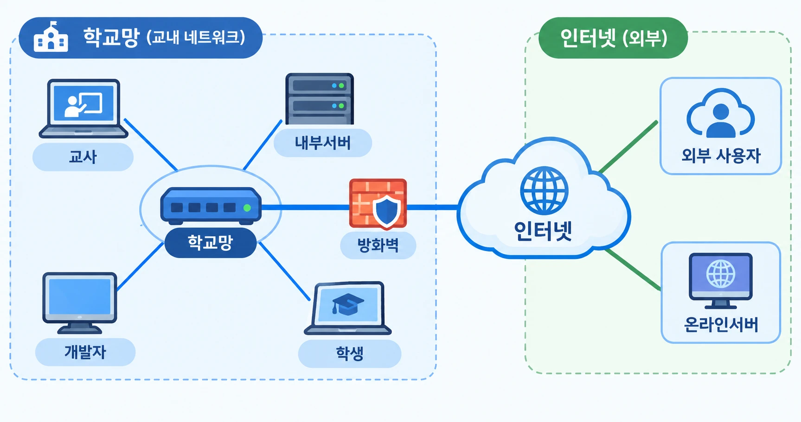

쓰는 사람에게는 어떤 상황이고, 만드는 사람은 무엇을 준비해야 하는가
등장인물은 여섯입니다. 학교망 안에 교사, 학생, 내부서버, 개발자가 있고, 인터넷 쪽에 외부 사용자와 온라인서버가 있습니다. 둘 사이에는 방화벽이 서 있습니다. 여기서 "개발자"는 AI 도구로 앱을 만든 선생님 자신입니다.

③의 벽은 세 종류이고 서 있는 자리가 다릅니다. PC·서버 자체의 방화벽은 앱이 도는 컴퓨터 안에, 무선과 유선의 분리는 학생 기기와 학교망 사이에, 학교 방화벽은 지도 한가운데 학교망과 인터넷 사이에 있습니다.
| 묶음 | 담긴 내용 |
|---|---|
| 사용자에게는 | 쓰는 사람이 무엇을 하고, 무엇을 보게 되는가 |
| 이 상황의 주소 | 쓰는 사람이 주소창에 넣는 것. 내부 IP, 고정 IP, DNS, URL 같은 말을 그것이 처음 필요해지는 상황에서 설명합니다. |
| 개발자가 준비할 것 | 배포 장소(앱을 어디에 두나), 호스팅(누가 켜 두나), 주소(무엇을 알려 주나), 데이터·DB(어디에 쌓이나) |
| 용어 | 쉬운 설명 |
|---|---|
| 배포 | 만든 앱을 쓰는 사람이 닿을 수 있는 자리에 올려 두는 일. |
| 호스팅 | 앱을 계속 켜 두고 접속을 받아 주는 일. 내 PC가 할 수도, 학교 서버가 할 수도, 바깥 서비스에 맡길 수도 있습니다. |
| 데이터베이스 (DB) | 앱이 꺼졌다 켜져도, 다른 사람이 접속해도 사라지지 않는 저장 공간. |
| 포트 (:3000) | 한 컴퓨터 안에서 프로그램을 구분하는 번호. 주소 뒤에 붙습니다. |
| 방화벽 | 들어오는 연결을 막는 문지기. 컴퓨터마다, 학교망 입구마다 따로 있습니다. |
주소에 관한 말(URL, 내부 IP, 고정 IP, DNS, 공인 IP, 도메인)은 아래 각 상황의 「이 상황의 주소」에서 하나씩 설명합니다.
쓰는 사람이 만든 사람 자신입니다. 내 PC에서 만든 것을 내 PC의 브라우저로 엽니다. 인터넷이 끊겨도 열립니다.
옆자리 선생님에게 이 주소를 알려 주면 아무것도 열리지 않습니다. 그 주소는 내 PC 안에서만 뜻이 있기 때문입니다.
URL은 주소창에 들어가는 글자 전체입니다. "어떤 방식으로(http://), 어느 컴퓨터의(주소), 몇 번 창구로(:포트), 무엇을(/경로)"의 순서로 읽습니다.
localhost는 "지금 이 컴퓨터 자신"이라는 뜻의 주소입니다. 어느 PC에서 치든 그 PC 자신을 가리키므로, 남에게 알려 줄 수 있는 주소가 아닙니다. file:///로 시작하는 것은 내 PC의 파일을 직접 연 것입니다.
| 배포 장소 | 없습니다. 내 PC의 프로젝트 폴더가 전부입니다. |
|---|---|
| 데이터·DB | 대개 필요 없습니다. 저장이 필요해도 내 PC 안의 파일이나 내 PC에 설치한 DB로 끝납니다. |
아직 쓰는 사람은 개발자 혼자입니다. 다만 앱이 내 PC가 아니라 학교 안의 서버 컴퓨터에서 돌고, 나는 내 자리에서 주소를 넣어 들어갑니다.
내 PC를 꺼도 앱은 서버에서 계속 돕니다. 학교 밖에서는 이 주소가 열리지 않습니다.
내부 IP는 학교망 안의 기기마다 붙은 번호입니다. 학교망은 대개 10.으로 시작하고, 가정용 공유기는 192.168.로 시작합니다. 같은 망 안에서만 통하고 학교 밖에서는 뜻이 없습니다.
내부 IP는 기기가 망에 붙을 때 자동으로 받는 경우와, 학교가 번호를 정해 준 경우가 있습니다. 서버는 주소가 바뀌면 모두가 길을 잃으므로 고정 IP(바뀌지 않게 정해 둔 번호)를 받아야 합니다.
| 배포 장소 | 학교 안의 서버 컴퓨터. 항상 켜 두는 PC 한 대를 정합니다. 전산 담당 선생님과의 협의가 먼저입니다. |
|---|---|
| 주소 | 전산 담당에게 고정 IP를 받습니다. 서버의 방화벽에서 앱이 쓰는 포트를 열어야 다른 PC에서 들어옵니다. |
| 데이터·DB | 서버 PC 안에 둡니다. 자세한 것은 4번에서 다룹니다. |
교무실의 동료 선생님이 내가 메신저로 보낸 주소를 자기 PC 브라우저에 넣어 내 PC의 앱을 엽니다. 설치할 것은 없습니다.
내 노트북이 켜져 있는 동안에만 열립니다. 내가 노트북을 덮거나 퇴근하면 상대 화면도 끊기고, 내일은 주소가 달라져 있을 수 있습니다.
모양은 2번과 같지만 이번에는 내 PC의 내부 IP입니다.
내 PC의 번호가 고정인지 아닌지에 따라 수명이 달라집니다. 무선으로 붙은 노트북은 붙을 때마다 번호를 새로 받는 경우가 많아, 어제 알려 준 주소가 오늘은 안 될 수 있습니다. 그래서 계속 쓰는 용도로는 맞지 않습니다.
| 배포 장소 | 없습니다. 앱은 여전히 내 PC에 있습니다. |
|---|---|
| 호스팅 | 내 PC가 잠깐 맡습니다. 내 PC가 켜져 있는 동안만 유지됩니다. |
| 주소 | 내 PC의 내부 IP와 포트를 알려 줍니다. 앱이 다른 PC의 접속도 받도록 열려 있어야 하고, 내 PC의 방화벽이 그 포트를 통과시켜야 합니다. |
| 데이터·DB | 내 PC에 그대로 있습니다. 상대가 입력한 것도 내 PC에 쌓입니다. |
선생님들이 교무실 PC의 즐겨찾기나 바탕화면 바로가기로 앱을 열어 매일 업무에 씁니다. 누가 만들었는지, 어디서 도는지는 몰라도 됩니다.
여러 사람이 동시에 쓰고, 어제 입력한 내용이 오늘도 남아 있어야 합니다. 서버가 꺼지면 모두의 업무가 멈춥니다. 집에서는 열리지 않습니다.
여럿이 매일 쓰는 주소는 짧고 바뀌지 않아야 합니다. 웹의 기본 포트(80)로 앱을 열면 주소 뒤의 :3000을 쓰지 않아도 됩니다.
DNS는 이름을 번호로 바꿔 주는 전화번호부입니다. 학교 안에서 쓰는 DNS에 "이 이름은 10.1.2.50"이라고 등록하면 숫자 대신 이름으로 열 수 있습니다. 등록은 그 DNS를 관리하는 쪽(전산 담당, 경우에 따라 교육청)에 요청해야 하고, 안 되는 학교에서는 고정 IP를 담은 바로가기를 나눠 주는 것으로 대신합니다.
| 배포 장소 | 학교 안의 서버 컴퓨터. |
|---|---|
| 주소 | 고정 IP는 필수이고, 가능하면 내부 DNS 이름을 붙입니다. 쓰는 사람에게는 바로가기 하나로 나눠 줍니다.
내부IP가 고정 IP인 경우, 컴퓨터 이름으로 주소를 대신해도 됩니다. |
| 데이터·DB | 서버 안의 데이터베이스에 쌓습니다. 여러 사람이 동시에 쓰므로 파일 하나에 적는 방식은 맞지 않습니다. 서버 PC가 고장 나면 함께 사라지므로 정기 백업이 필요합니다. |
| 접근 통제 | 교내망의 누구나 주소만 알면 들어옵니다. 사람마다 볼 수 있는 것이 달라야 하면 로그인을 둡니다. 개인정보가 들어가면 학교 정보보호 지침을 확인합니다. |
| 고친 것 반영 | 개발자PC에서 서버컴퓨터의 프로그램을 업그레이드할 수 있는 방법을 찾아야 합니다. |
학생이 태블릿이나 휴대전화로 내 노트북의 앱에 들어옵니다. 주로 QR코드 사용. 긴 숫자 주소를 손으로 치는 일은 현실적으로 어렵습니다.
학생 화면에는 "사이트에 연결할 수 없음"만 뜨고 왜 안 되는지는 보이지 않습니다. 교사 노트북끼리는 되던 것이 학생 기기에서만 안 되는 일이 가장 흔한 구간입니다.
주소는 3번과 같습니다. 달라지는 것은 학생 기기가 받은 번호입니다. 무선 기기는 10.1.30.x처럼 유선과 다른 대역의 내부 IP를 받는 경우가 많습니다.
내부 IP는 앞자리가 같은 대역끼리는 바로 통하지만, 대역이 다르면 그 사이를 이어 주는 설정이 있어야 합니다. 학교는 보통 학생용 무선에서 교사용 유선으로 넘어오는 길을 막아 둡니다. 이것은 주소나 코드로 풀 수 없고 전산 담당에게 확인할 일입니다.
| 배포 장소 | 없습니다. 앱은 내 PC에 있습니다 . |
|---|---|
| 호스팅 | 내 PC가 잠깐 맡습니다. 한 반이 동시에 들어오면 내 노트북이 감당하는지가 문제가 됩니다. |
| 주소 | 내 PC의 내부 IP와 포트를 QR코드로 나눠 줍니다. 무선 대역에서 내 PC로 오는 길이 열려 있는지 먼저 확인합니다. |
| 보안 연결 | 내부 IP 주소는 https://가 아닙니다. 브라우저는 보안 연결이 아니면 카메라·마이크·위치 기능을 막으므로, 그런 기능을 쓰는 앱은 9번으로 가야 합니다. |
| 데이터·DB | 내 PC에 쌓입니다. 수업이 끝나고 내 PC를 끄면 학생은 다시 볼 수 없습니다. |
한 반 학생 전체가 QR코드로 들어와 수업 활동을 하고 결과를 제출합니다. 교사는 자기 화면에서 제출 현황을 봅니다.
한 명이라도 안 들어와지면 수업 흐름이 끊기고, 제출한 것이 사라지면 다시 시킬 수 없습니다. 학생에게는 "평소 쓰던 수업 사이트"와 똑같아 보여야 합니다.
서버의 고정 IP(또는 내부 DNS 이름)는 4번과 같습니다. 주소가 바뀌지 않으므로 QR코드를 한 번 만들어 두면 계속 씁니다.
5번과 달리 열어 달라고 요청할 대상이 분명합니다. "학생용 무선 대역에서 이 서버의 고정 IP, 이 포트 하나만" 허용해 달라고 전산 담당에게 요청할 수 있습니다. 서버 주소가 고정이기 때문에 가능한 요청입니다.
| 배포 장소 | 학교 안의 서버 컴퓨터 (4번과 같음). |
|---|---|
| 주소 | 고정 IP나 내부 DNS 이름을 QR코드로 나눠 줍니다. 무선 대역에서 서버로 가는 길을 열어 달라고 요청합니다. |
| 데이터·DB | 서버 안의 데이터베이스가 꼭 필요합니다. 30명이 같은 순간에 제출하면 파일에 적는 방식은 서로 덮어씁니다. 학생마다 자기 것만 보이도록 나눠 저장합니다. |
| 학생 구분 | 누가 냈는지 알아야 하면 이름 대신 번호나 닉네임을 씁니다. 개인정보는 필요한 만큼만 받습니다. |
학교 밖에 있는 사람(다른 학교 선생님, 집에 있는 동료)이 내가 보낸 링크를 눌러 내 노트북의 앱을 봅니다. 주소는 낯선 글자가 섞인 모양입니다.
내가 통로를 닫는 순간 그 링크는 죽고, 다음에 다시 열면 주소가 달라집니다. "잠깐 보여 주는" 용도입니다.
내부 IP는 학교 밖에서 뜻이 없습니다. 인터넷에서 통하는 번호는 공인 IP인데, 학교는 대표 공인 IP 하나를 전체가 함께 쓰므로 내 PC만의 공인 IP는 없습니다. 밖에서 내 PC를 가리킬 주소가 없는 것입니다.
터널 서비스는 자기 쪽에 임시 공개 주소를 만들고, 그 주소로 온 요청을 내 PC가 미리 걸어 둔 연결로 넘겨 줍니다. 이름과 보안 연결(https)은 터널 서비스가 붙여 줍니다. 터널을 끄면 주소도 사라집니다.
| 배포 장소 | 없습니다. 앱은 내 PC에 있습니다. |
|---|---|
| 호스팅 | 내 PC가 잠깐 맡고, 터널 서비스(Cloudflare Tunnel, ngrok 등)가 앞에서 주소를 대신 내줍니다. |
| 주소 | 터널 서비스가 만들어 주는 임시 주소를 그대로 씁니다. 도메인도 DNS도 준비할 것이 없습니다. |
| 데이터·DB | 내 PC에 그대로 있습니다. 통로가 열린 동안은 주소를 아는 누구나 그 앱을 봅니다. 학생 자료가 보이는 앱은 이 방식으로 열지 않습니다. |
| 사전 확인 | 터널은 학교 방화벽을 우회해 안쪽 PC를 밖에 여는 일입니다. 학교망에서 해도 되는지 전산 담당에게 먼저 묻습니다. |
선생님이 집에서, 또는 학부모가 밖에서 교내 서버의 앱을 평범한 웹사이트처럼 엽니다. 주소는 도메인 이름이고 자물쇠 표시가 붙어 있으며, 로그인을 해야 들어갑니다.
쓰는 사람에게는 9번과 차이가 없어 보입니다. 차이는 전부 만드는 쪽과 학교의 책임에 있습니다.
밖에서 교내 서버까지 닿으려면 주소가 세 번 이어져야 합니다.
① 도메인 이름을 구합니다. ② 인터넷의 DNS에 "이 이름은 학교의 공인 IP"라고 등록합니다. 4번의 내부 DNS와 달리 전 세계가 보는 전화번호부입니다. ③ 학교 방화벽에서 "이 포트로 들어온 것은 서버의 고정 IP로 넘긴다"(포트포워딩)고 정합니다.
인터넷을 지나가므로 https://가 되어야 하고, 그러려면 인증서를 붙이고 갱신해야 합니다.
| 배포 장소 | 학교 안의 서버 컴퓨터 (4번과 같음). |
|---|---|
| 호스팅 | 학교가 직접 합니다. 인터넷에 열린 서버는 공격 시도를 계속 받으므로, 보안 업데이트를 맡을 사람이 정해져 있어야 합니다. |
| 주소 | 도메인, 공개 DNS 등록, 방화벽의 포트포워딩, HTTPS 인증서. 넷 다 필요합니다. |
| 데이터·DB | 서버 안의 데이터베이스와 정기 백업 (4번과 같음). 로그인과 접속 기록을 반드시 둡니다. |
| 승인 | 학교 방화벽 설정은 개인이 정할 수 없고, 학교 단독으로도 못 바꾸는 경우가 많습니다(교육청 관할). 승인 절차가 먼저입니다. |
누구든 주소만 알면 집에서든 휴대전화로든 엽니다. 우리가 아는 보통의 웹사이트입니다.
만든 사람의 컴퓨터가 꺼져 있어도, 밤이어도 열립니다. 주소가 바뀌지 않으므로 한 번 알려 주면 계속 씁니다.
8번에서 직접 해야 했던 것(이름, DNS 등록, 공인 IP, HTTPS 인증서)을 호스팅 서비스가 전부 대신 해 줍니다. 배포하면 이 주소가 바로 나옵니다.
학교 이름이 들어간 주소를 쓰고 싶을 때만 도메인을 구해 DNS에 "이 이름은 Vercel로"라고 한 줄 등록합니다. 자세한 것은 Vercel과 Cloudflare에 있습니다.
| 배포 장소 | 코드는 GitHub 저장소에, 앱은 Vercel 같은 호스팅 서비스에 둡니다. GitHub에 올리면 Vercel이 가져가 배포합니다. |
|---|---|
| 호스팅 | 서비스가 합니다. 켜 두기, 보안 연결, 접속 처리를 우리가 관리하지 않습니다. 개인·소규모 용도는 무료 범위 안에서 됩니다. |
| 주소 | 서비스가 주는 주소를 그대로 씁니다. 준비할 것이 없습니다. |
| 데이터·DB | 저장할 것이 없으면 필요 없습니다. 제출물이나 기록이 쌓여야 하면 온라인 데이터베이스(Neon, Supabase 등)를 따로 붙입니다. 호스팅 서버는 파일에 적어 둔 내용을 기억하지 못합니다. |
| 비밀 키 | 앱이 DB나 다른 서비스의 키를 쓰면 코드에 적지 않고 호스팅 서비스의 환경변수 설정에 넣습니다. |
| 올리기 전 점검 | GitHub 저장소는 공개될 수 있습니다. 키, 학생·교직원 자료, 정답 파일은 올리지 않습니다. |
교사와 학생이 학교 안에서 9번으로 만든 앱을 엽니다. 평소 쓰는 다른 사이트와 다를 것이 없습니다.
그런데 집에서는 잘 열리던 주소가 학교에서만 "접근이 제한되었습니다"로 막히거나, 교사 PC에서는 되는데 학생 태블릿에서만 안 되는 일이 생깁니다. 수업에서 가장 자주 마주치는 상황입니다.
주소는 9번과 똑같습니다. 다만 학교망에서 나가는 길목의 필터는 주소의 이름 부분을 보고 막습니다. 무료 호스팅 서비스의 이름(vercel.app 등)이 통째로 막혀 있으면, 그 아래의 내 앱도 함께 막힙니다.
앱이 화면 뒤에서 부르는 다른 주소(온라인 DB, 글꼴, 라이브러리)도 각각 같은 필터를 지납니다. 화면은 뜨는데 저장만 안 되는 경우가 여기서 생깁니다.
| 배포 장소 | GitHub 저장소와 호스팅 서비스 (9번과 같음). |
|---|---|
| 호스팅 | 서비스가 합니다 (9번과 같음). |
| 주소 | 학교망에서 그 주소가 열리는지 교사 PC와 학생 기기 양쪽에서 미리 확인합니다. 막혀 있으면 전산 담당에게 허용을 요청하거나, 같은 저장소를 다른 호스팅 서비스에도 연결해 주소를 하나 더 만들어 둡니다. |
| 데이터·DB | 온라인 DB를 쓴다면 그 DB의 주소도 학교망에서 열려야 합니다. 그리고 학생이 입력한 내용은 학교 밖의 서버에 저장됩니다. 이름 대신 번호를 쓰고 필요한 것만 받습니다. |
npm, git push)는 self-signed certificate 오류로 멈출 수 있습니다.| 번호 | 쓰는 사람 | 배포 장소 | 호스팅 | 쓰는 사람에게 주는 주소 | 데이터·DB |
|---|---|---|---|---|---|
| 1 | 개발자 혼자 | 없음 (내 PC) | 필요 없음 | 없음 (localhost) | 내 PC |
| 2 | 개발자 | 내부서버 | 학교가 직접 | 고정 IP + 포트 | 서버 안 |
| 3 | 교사 (유선) | 없음 (내 PC) | 내 PC가 잠깐 | 내 PC의 내부 IP + 포트 | 내 PC |
| 4 | 교사 (유선) | 내부서버 | 학교가 직접 | 고정 IP 또는 내부 DNS 이름 | 서버 안의 DB + 백업 |
| 5 | 학생 (무선) | 없음 (내 PC) | 내 PC가 잠깐 | 내 PC의 내부 IP → QR | 내 PC |
| 6 | 학생 (무선) | 내부서버 | 학교가 직접 | 고정 IP 또는 내부 DNS 이름 → QR | 서버 안의 DB + 백업 |
| 7 | 외부 사용자 | 없음 (내 PC) | 내 PC + 터널 서비스 | 터널의 임시 공개 주소 | 내 PC |
| 8 | 외부 사용자 | 내부서버 | 학교가 직접 | 도메인 + 공개 DNS + HTTPS | 서버 안의 DB + 백업 |
| 9 | 외부 사용자 | GitHub + 호스팅 서비스 | 서비스가 | 서비스가 주는 주소 | 온라인 DB (필요할 때) |
| 10 | 교사 · 학생 (교내) | GitHub + 호스팅 서비스 | 서비스가 | 9번과 같음 (학교망에서 열리는지 확인) | 온라인 DB (필요할 때) |
| 주소의 종류 | 통하는 범위 | 누가 정해 주나 | 나오는 상황 |
|---|---|---|---|
localhost | 그 PC 한 대 | 정할 것 없음 | 1 |
| 내부 IP (자동으로 받은 것) | 학교망 안, 바뀔 수 있음 | 학교망이 자동으로 | 3 · 5 |
| 고정 IP | 학교망 안, 바뀌지 않음 | 전산 담당 | 2 · 4 · 6 · 8 |
| 내부 DNS 이름 | 학교망 안, 이름으로 | 교내 DNS 관리자 | 4 · 6 |
| 터널의 임시 주소 | 인터넷 전체, 켜 둔 동안만 | 터널 서비스 | 7 |
| 호스팅 서비스의 주소 | 인터넷 전체, 계속 | 호스팅 서비스 | 9 · 10 |
| 내 도메인 + 공개 DNS | 인터넷 전체, 계속 | 도메인 판매처와 DNS 서비스 | 8 · (9에서 선택) |
지금까지는 "앱이 어디서 도는가"만 물었습니다. 앱이 AI 모델을 부르거나 데이터를 저장하기 시작하면 같은 질문을 두 번 더 해야 합니다. 이후 연수에서 만들 프로그램이 여기에 해당합니다.
| 구성 | 앱 | AI 모델 | 데이터 | 따라오는 것 |
|---|---|---|---|---|
| 전부 온라인 | 온라인서버 | AI 회사 서버 (API 키로 호출) | 온라인 DB | 9번처럼 배포가 쉽습니다. 입력한 내용이 학교 밖으로 나가고, 쓰는 만큼 비용이 듭니다. |
| 전부 내 PC | 내 PC (데스크톱 앱) | 내 PC (Ollama로 Qwen 등 실행) | 내 PC에 설치한 DB | 1번의 자리입니다. 자료가 PC 밖으로 나가지 않고 인터넷이 없어도 됩니다. PC 성능이 필요하고, 쓰는 사람마다 설치해야 합니다. |
| 교내 서버 한 대 | 내부서버 | 내부서버 | 내부서버의 DB | 4·6번의 준비가 그대로 필요합니다. 모델을 돌릴 만한 서버와 관리할 사람이 있어야 합니다. |